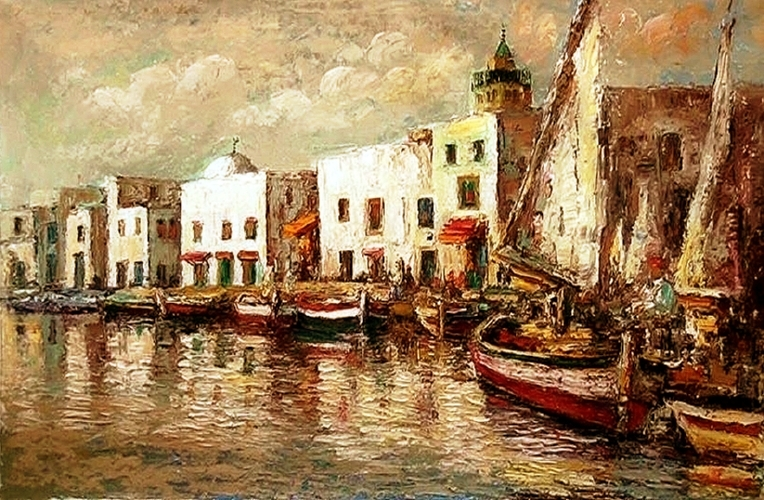
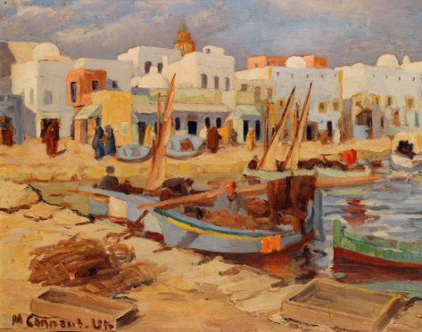
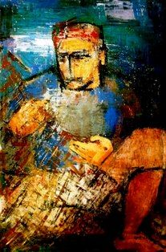
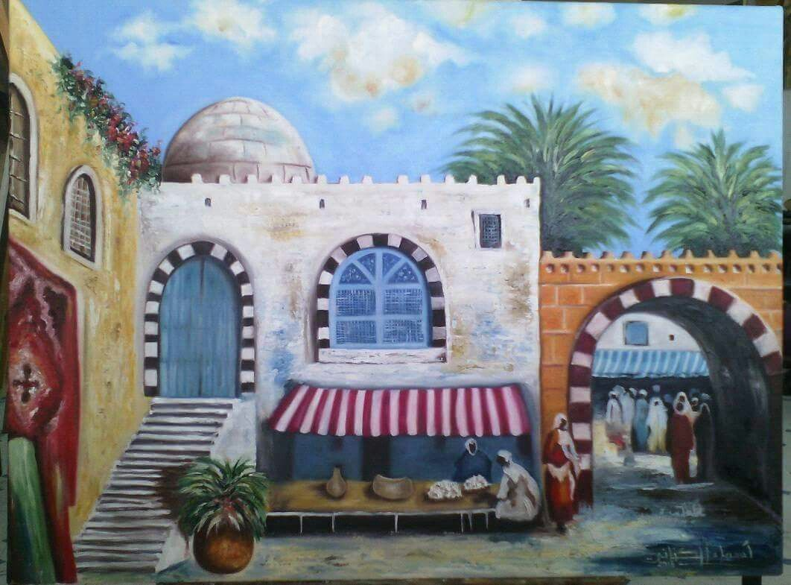
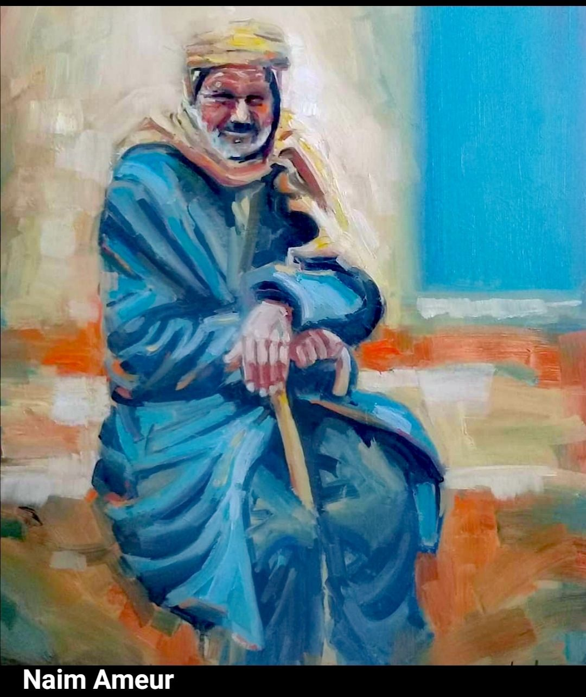
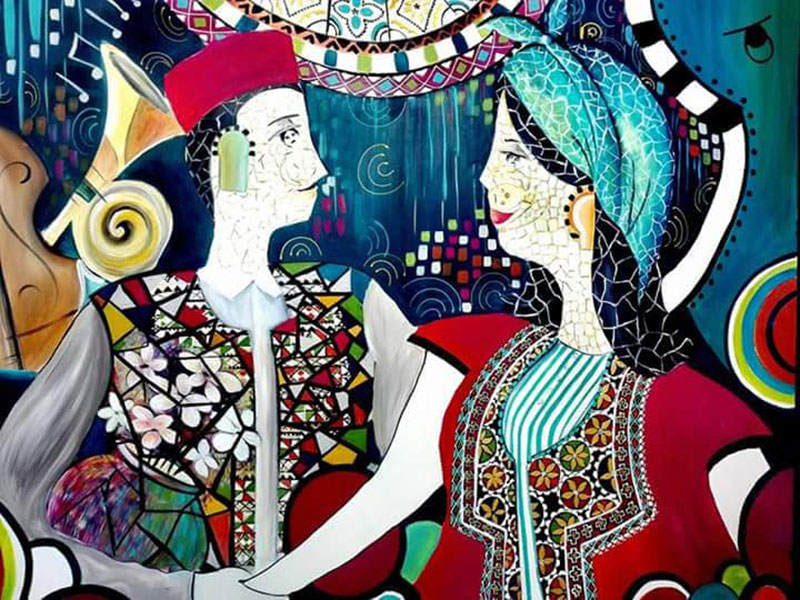
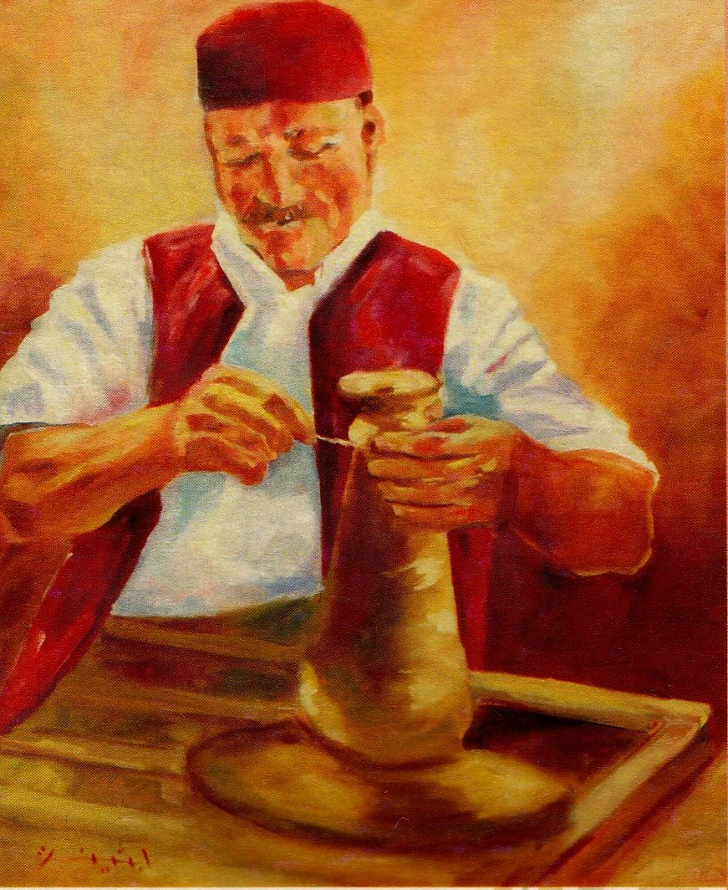
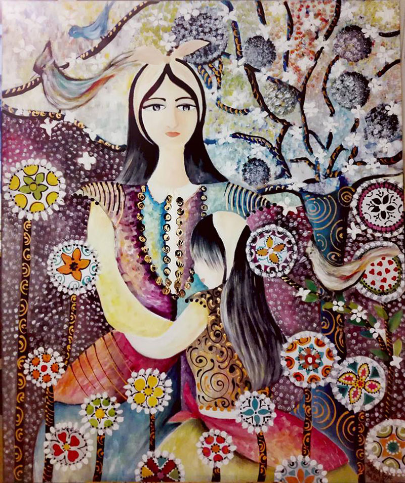
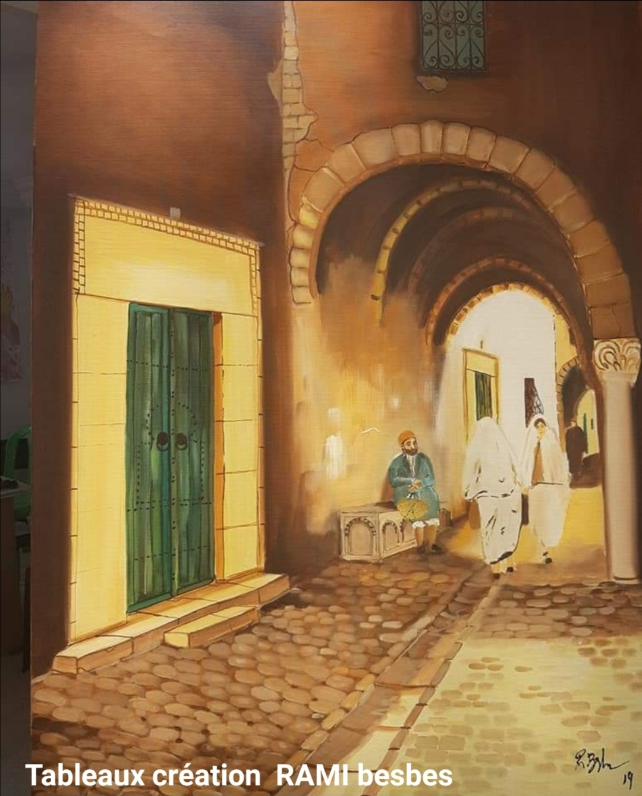
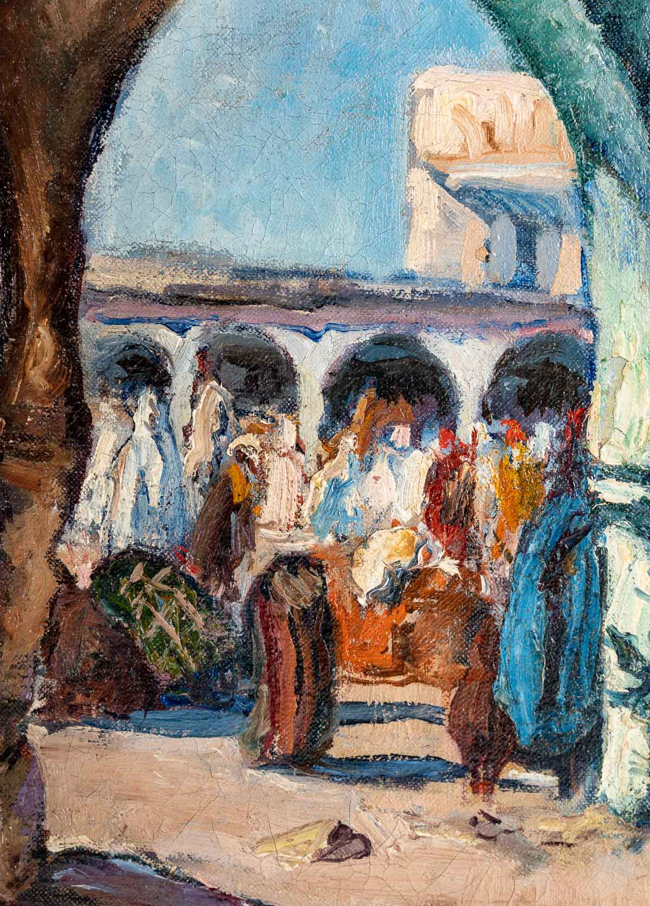

Galerie des Artistes Tunisiens
Découvrez les créations emblématiques des artistes tunisiens, du figuratif à l'abstraction contemporaine.

Ammar Farhat
La Conquête du Cosmos (1976) : un hommage à la femme tunisienne et au travail du peuple.

Hatem El Mekki
Les Aveugles : une métaphore de solidarité et d'incertitude historique.

Yahia Turki
Scène du Port de La Goulette : capture poétique du quotidien tunisien.

Jellal Ben Abdallah
Les Femmes de Kairouan : vie traditionnelle féminine idéalisée et poétique.

Ali Bellagha
Métamorphoses : formes organiques et symboliques explorant le patrimoine maghrébin.

Nja Mahdaoui
Calligraphie abstraite : dialogue entre tradition scripturale et abstraction contemporaine.

Rachid Koraïchi
Les Sept Dormants : œuvre mystique reliant patrimoine soufi et art contemporain.

Safia Farhat
Composition aux Oiseaux : modernisme et valorisation de l’artisanat tunisien.

Safia Farhat
Composition aux Oiseaux : modernisme et valorisation de l’artisanat tunisien.

Safia Farhat
Composition aux Oiseaux : modernisme et valorisation de l’artisanat tunisien.